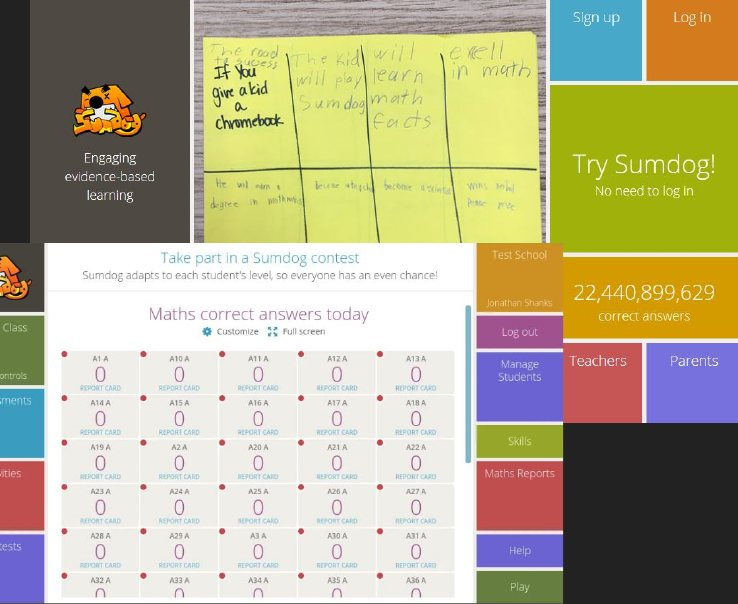
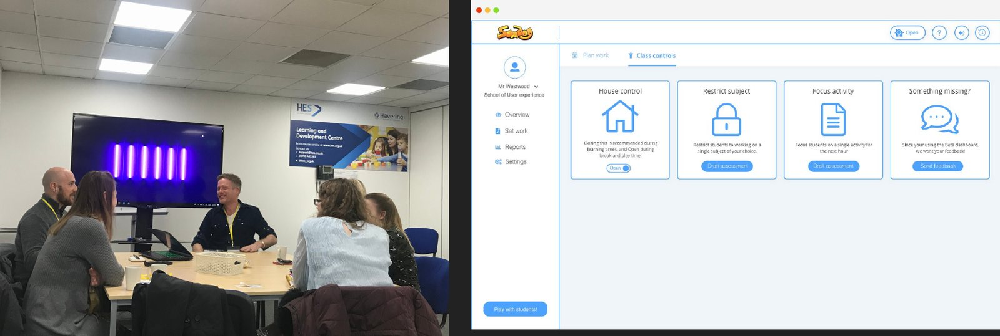
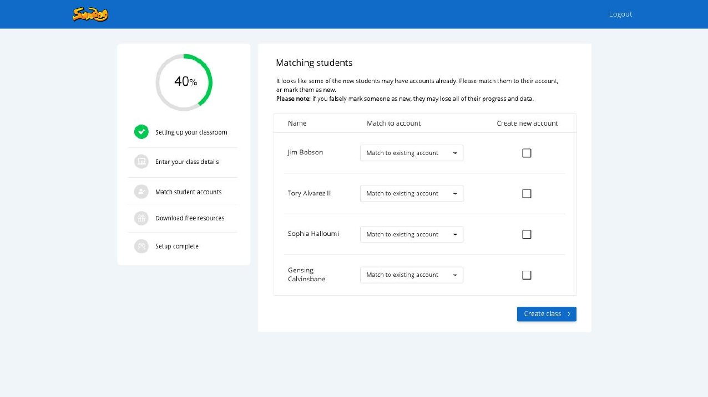
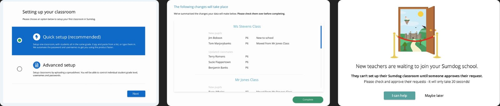
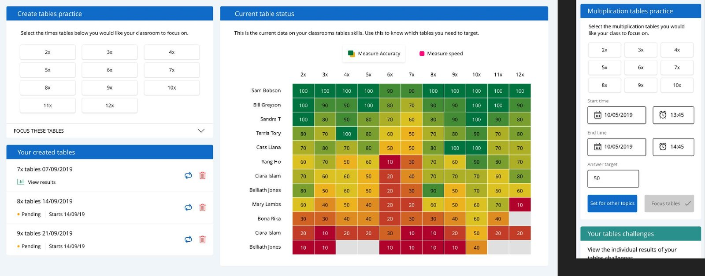
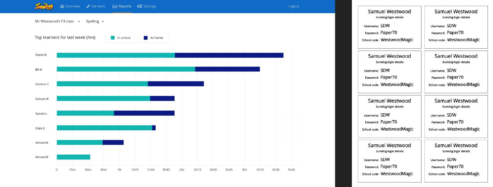
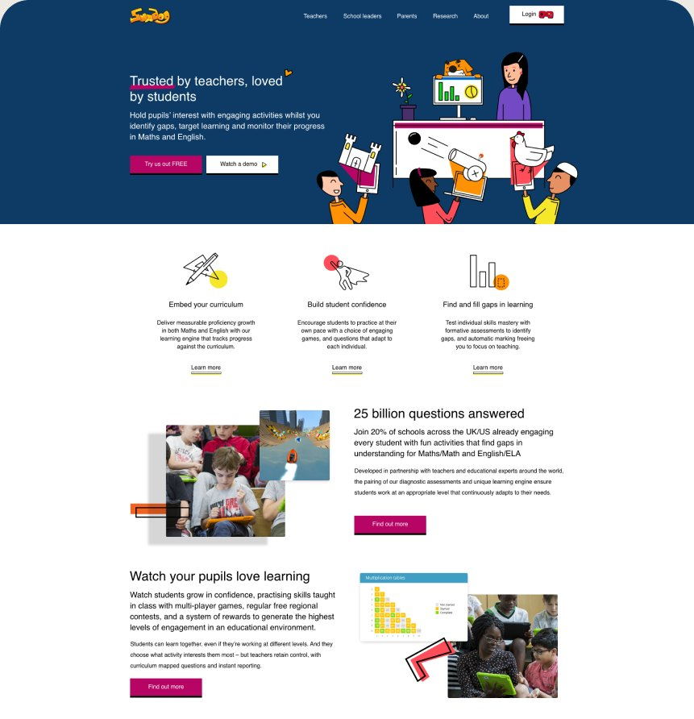

Sumdog: making a chaotic teacher dashboard easy to learn
Sumdog's teachers loved what the product did for their pupils but struggled to use it themselves. As the company's first UX designer, I set up its research from scratch and used it to rebuild onboarding, the dashboard and the tools teachers use every day.
The UI in this project is a little dated now, but the research and UX involved are still very interesting (hopefully).
The context
Sumdog is an educational games studio helping children enjoy maths and spelling. Millions of children use it, across around 50,000 classrooms, answering more than 3.5 billion questions a year.
When I joined, I was the first UX designer. There was very little understanding of who the users were, what they needed or how well the product was working for them. What there was, though, was a lot of feedback from teachers about how hard the product was to use, and those frustrations were costing the business customers.

Goals
The goals shifted as the research came in, but the core of it was to:
- Discover the key challenges teachers were facing
- Find the needs we weren't catering for
- Build a reliable way to gather user feedback, permanently
- Act on what we learned
Building research from nothing
The only ways to hear from users were cold calls and school visits. So I built a proper research setup:
- A panel of 100+ teachers and parents, incentivised to give us feedback at least once a month
- A shared feedback database that customer service and sales could add to, so every customer quote ended up in one place
- Three months of user interviews, compiled and categorised into personas and user journeys
- New data funnels for onboarding and usage, so we could track patterns rather than guess
Who we were designing for
Three teacher personas came out of the research, from someone who barely knew the product to a power user running it for the whole school.
- About
- New teacher, not entirely sure what "Some dog?" is. Uses it on Fridays as a reward.
- Pain points
- Some kids can't log in and get upset. Updates stall play time.
- About
- Used Sumdog for about a year to practise core maths. Loves the engagement it brings.
- Pain points
- Unintuitive to learn, takes too long to find useful information, kids aren't rewarded for learning.
- About
- Sumdog champion who has built it into the curriculum and sets up classes for other teachers.
- Pain points
- Reporting takes ages and needs external tools. She spends a lot of time acting as admin for the school.
The biggest problem areas
First-time experience
A poor onboarding left users lost, creating duplicate schools and never seeing the product's value.
Learnability
No information architecture and an overwhelming homepage. Teachers were running training sessions in their spare time.
Classroom control
Teachers couldn't tell what the kids were up to. Were they learning, or just having fun?
How we worked
The dev teams followed Agile, so I matched it with a Lean UX loop of think, make and check. We built prototypes quickly and tested them with real users every week.

What we changed
A first-time experience that works
Walking through the whole onboarding flow showed where it broke down:
- Spreadsheet uploads failed, so teachers were typing in students by hand, sometimes 1,000+ of them
- Several "schools" were being created for one real school, splitting classes apart
- Children who couldn't read yet were being asked to enter passwords
The new flow offers a recommended quick setup, matches new students to existing accounts so progress isn't lost, and stops duplicate schools by asking new teachers to join their existing one.


A dashboard teachers can learn
Honestly, the old dashboard was horrible. I gathered every feature into clear areas, ran card sorting and then tree testing on the navigation, then redesigned the visuals. The new homepage puts the class report, competitions and classroom controls front and centre.



The results
more teachers. Finding their school was easier, so colleagues finally joined in.
duplicate schools created during onboarding
users tested on the new dashboard rated the usability improvements very highly
One result looked bad at first: the kids' app score briefly dropped. Hundreds of comments later, the reason was clear. Children were complaining they couldn't just chat with friends and had to actually do some work. Exactly what teachers wanted.
What I learned
Lean UX struggles with big changes
It worked brilliantly once the largest feature had shipped. For that, we used a hybrid with waterfall.
No solution fits everyone
Once you really know your users, you accept you can't please every one of them.
Balance users and business
A design can make people happy without making money. The job is to find both.